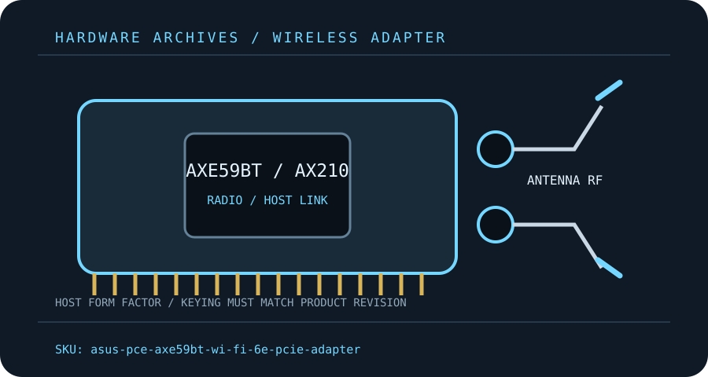

[ MODEL-SPECIFIC M.2 / PCIE WI-FI HARDWARE ]
ASUS PCE-AXE59BT AXE5400 Wi-Fi 6E PCIe Adapter
Tri-band PCIe desktop kit built around an Intel AX210-class M.2 radio module.
IDENTIFICATION: Match the full model, hardware revision, regulatory region and radio-module label before ordering replacements or selecting drivers. Values are manufacturer specifications, not a guaranteed measurement.

Dedicated wireless specifications
| Cataloged product | ASUS PCE-AXE59BT AXE5400 Wi-Fi 6E PCIe Adapter |
|---|---|
| Chipset / radio module | Intel Wi-Fi 6E AX210-class radio module is commonly identified with this adapter family; ASUS public specifications do not identify the silicon part number, so verify the installed module label before replacement. |
| Wi-Fi generation / standards | Wi-Fi 6E (802.11ax), backward compatible with 802.11ac/n/a/b/g. |
| Radio bands, channels & width | 2.4 GHz, 5 GHz and 6 GHz. ASUS lists 6 GHz up to 2,402 Mb/s, 5 GHz up to 2,402 Mb/s and 2.4 GHz up to 574 Mb/s. Windows 10 configurations are limited to 2.4/5 GHz per ASUS. |
| Spatial streams / nominal link rates | 2×2 MIMO; channel widths and actual link rates depend on the AP, region and client configuration. |
| Host interface / form factor / keying | PCIe x1 desktop carrier with M.2 Key E radio module; Bluetooth uses the included internal USB header cable. |
| Antenna connectors | Two detachable antenna leads with a desktop antenna base; two threaded external antenna ports on the card/base assembly. Match the supplied connectors and do not torque coax pigtails. |
| Bluetooth | Bluetooth 5.2; the Bluetooth side uses the motherboard USB 2.0 header cable and a separate OS driver. |
| Operating-system / driver compatibility | ASUS specification lists Windows 11 64-bit and Windows 10 64-bit (Windows 10 limited to 2.4/5 GHz). Use ASUS or chipset-vendor driver matching the installed module. |
| Regulatory and host caveats | A 6 GHz-capable AP and a legally enabled 6 GHz region are required; Windows 10 on this SKU does not provide 6 GHz per ASUS. PCIe fit alone does not power Bluetooth—connect the USB header lead. Validate case clearance and supplied antenna-base cable length. |
Model-specific installation notes
Install only with the host powered down and follow the manufacturer’s manual for slot, cable, antenna and ESD precautions. Fit and electrical compatibility are separate questions: the host must support the stated interface, firmware and driver for this exact SKU.
Nominal PHY rates vary with channel width, modulation, signal quality, regulatory domain, AP capabilities and concurrent client traffic. They are not measured Internet or application throughput. Confirm local 6 GHz/5 GHz channel permissions before deployment.
Manufacturer sources
- ASUS PCE-AXE59BT technical specificationsASUS lists bands, nominal rates, antennas and supported OS.
- ASUS PCE-AXE59BT quick-start guideASUS installation guide for card, antenna and Bluetooth USB-header setup.
Source pages can be regional or revision-specific. Use the exact manufacturer page and package matching the label on the adapter and host.